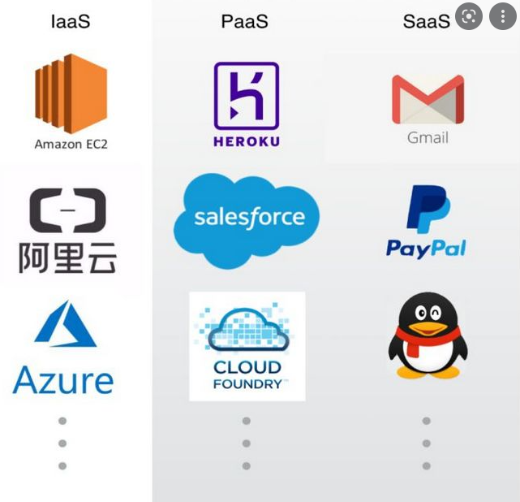
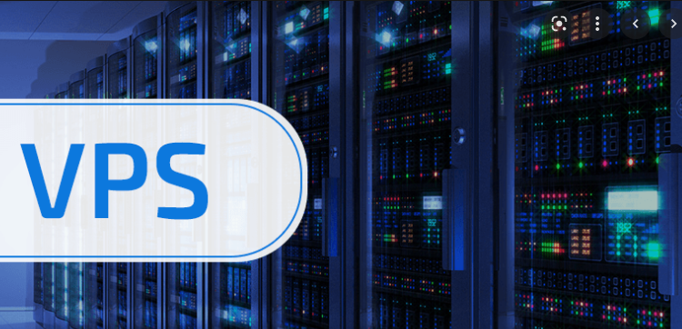
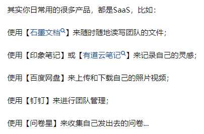
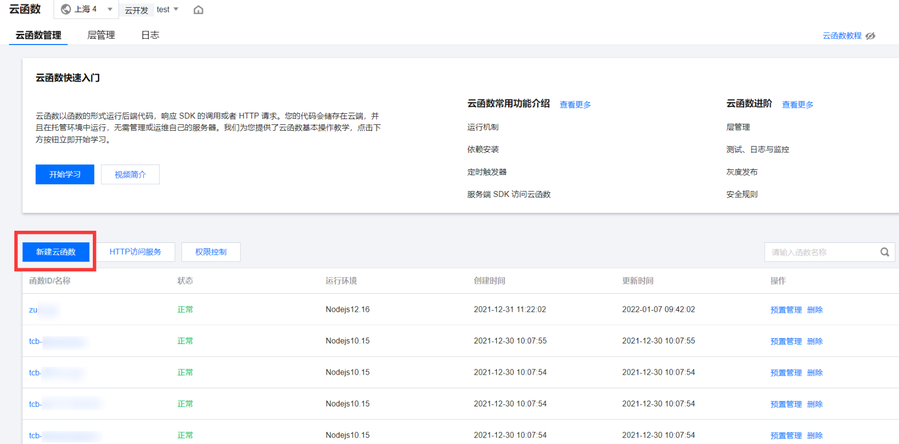
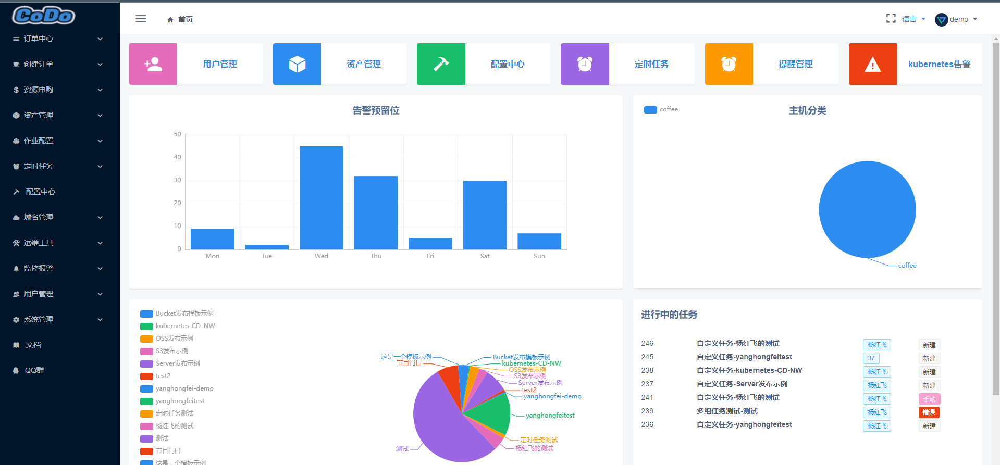
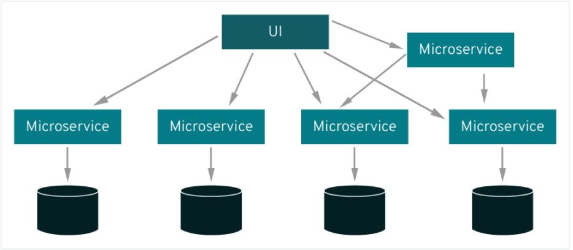
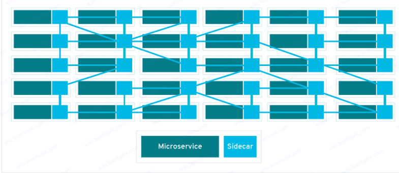

云原生的概念们
目录
私有、公有、混合云
公有云：由云服务厂商提供的云服务，服务器机房在云服务厂商，我们租用这些服务器的使用权。比如VPS、云服务器就属于公有云范畴
私有云：架设在企业内部的统一的服务器机房。比如母公司架设了云服务器机房专供分公司使用，分公司就不用自己再架设机房了。
混合云：公有云和私有云都用。比如一个公司一开始是私有云，但随着业务发展，私有云不能满足业务需求，但公司又不想扩建机房，于是租用了一批公有云机器，这就是混合云。
专有云：一种私有化部署的公有云
IaaS、PaaS和SaaS

三个名词的首字母分别对应基础设施(infrastructure)、平台(platform)和软件(software)
IaaS的意思是 基础设施即服务 你想搭一个博客，如果走的是IaaS路线，云服务厂商会给你提供一堆硬件设备，你得自己装操作系统、开发环境等工具，你有很高的自由度来指定这些设备来干什么。云服务器和VPS就属于IaaS概念。 比起自己本地搭建一个博客确实节约了很多成本，但是这样做仍然需要你有很高的技术能力，并且仍然需要付出比较多的维护管理成本。

PaaS的意思是 平台即服务 你想搭一个博客，如果走的是PaaS路线，云服务厂商会给你提供已经把操作系统、开发环境、数据库、中间件等基础工具都已经部署好的云服务器 比起IaaS直接给你一堆硬件，提供基础设施已经搭建完毕的云服务器会显得更加友好，博客上线的速度也会更快，但是比起IaaS牺牲了一点灵活性
SaaS 的意思时 软件即服务 说白了就是云软件。 比如百度网盘就属于Saas概念，我们可以通过使用百度网盘来存储数据。不论是IaaS、PaaS，想要搭建一个存储数据的云存储平台都还是需要一点计算机基础的，而使用百度网盘只需下载一个百度网盘注册个账号就能开箱即用，方便了太多。

比起IaaS、PaaS确实方便了很多，但是灵活性也受到了很大的阻碍。
除了上面的三个概念外，还有一些类似的概念。
BaaS 后端即服务、FaaS函数即服务。这两个概念都属于Serverless（无服务）的范畴，与上面三个有点区别。无服务是一种云原生模型：开发者不用去管服务器只负责开发就行
BaaS后端即服务 对于搭建网站，如果我们使用SaaS建站，那么当我们想要更改前端页面（比如加一个logo）的时候可能会遇到麻烦：那么多用户在用，不能为了你一个人而改。 BaaS就是为了解决此类问题而生的，我们只需要负责前端部分的开发，后端部分就交给云服务厂商吧。
FaaS 函数即服务 云函数就属于此类。我们直接可以在云上部署函数，这些函数每被调用一次产生一次收费。 收费更加灵活了。 FaaS 的相关产品主要有 AWS 的 Lambda、Azure 的 Functions Serverless Compute、GCP 的 Firebase Cloud Functions、阿里云的 Function Compute 等

serverless
无服务器计算，核心思想是让开发者注重于代码开发本身，而不是环境配置等工作。
Faas和Baas就是Serverless思想的体现之一。
所面临的安全问题：
文件驻留导致RCE
环境启动时下载第三方库造成RCE
DevOps
这是一个我随便找的DevOps demo网站，可以进去感受感受
http://dockerone.com/article/8948

简而言之，就是加强开发与运维人员之间沟通效率的一个平台。使开发运维一体化。DEV就是开发，OPS就是运维。
最开始程序开发是单体架构+瀑布模式，但随着业务量的增多，需要的工作人员也越多，需要多人协作开发，敏捷开发就出现了。 但是敏捷开发没有解决开发和运维人员之间的矛盾“运维的宿命就是维稳，他们是很讨厌变动的；开发的天职确是不断地推代码上线，进行代码变动，更替迭代，这两个工种天生就是对立的”，所以DevOps出现了，它的出现就是为了解决这一个问题，增强开发与运维之间的沟通效率。
DevOps常见的一些应用
项目管理（PM）：jira。运营可以上去提问题，可以看到各个问题的完整的工作流，待解决未解决等
代码管理：gitlab。jenkins或者K8S都可以集成gitlab，进行代码管理，上线，回滚等；
持续集成CI（Continuous Integration）：gitlab ci。开发人员提交了新代码之后，立刻进行构建、（单元）测试。根据测试结果，我们可以确定新代码和原有代码能否正确地集成在一起
持续交付CD（Continuous Delivery）：gitlab cd。完成单元测试后，可以把代码部署到连接数据库的 Staging 环境中更多的测试。如果代码没有问题，可以继续手动部署到生产环境中。
镜像仓库：VMware Harbor，私服nexus。
容器：Docker。
编排：K8S。
服务治理：Consul。脚
本语言：Python。
日志管理：Cat+Sentry，还有种常用的是ELK。
系统监控：Prometheus。
负载均衡：Nginx。
网关：Kong，zuul。
链路追踪：Zipkin。
产品和UI图：蓝湖。
公司内部文档：Confluence。
报警：推送到工作群。
——引用自知乎：小龙飞
可以从上面看到CI（持续集成）/CD（持续交付 ）这个概念
CI持续集成构建软件和完成初始测试的过程。大概会经历下面的阶段： 代码提交：通过Github、gitlab等技术将代码提交到代码存储库 静态代码检查：SAST白盒测试，以发现软件缺陷或者安全漏洞 构建：将源代码构建成二进制文件或者构建产物，进行构建验证测试查看模块是否兼容，并提交到中央存储库进行管理。一般会用到jenkins，maven等工具 测试：单元测试，测bug
CD是将代码与基础设施相结合的过程，确保完成所有测试并遵循策略，然后将代码部署到预期环境中 bake：创建镜像实例 部署：将镜像实例进行部署 验证：解决故障 监控：装监控软件（Zabbix、Nagios等）对系统进行分析监控 反馈和协作：反馈系统，向开发人员和项目经理提供反馈，以减少错误和性能问题，常用软件（JIRA，电子邮件）
CI/CD是DevOps平台不可或缺的部分，而CI/CD又是与办公网、生产网、开发网都有交互的东西，所以通常情况下控制了DevOps平台也就意味着有能突破进生产网的方法。
服务网格
提服务网格就不得不说到微服务：https://www.zhihu.com/question/65502802
简而言之，微服务把业务系统拆分成一个一个的模块（或者叫微服务），每个模块各司其职，能有效解决业务系统发展到后期杂乱无章的状态。

但是微服务与微服务之间也是有通信的，在模块少的时候只需要用代码逻辑为每个服务编写一套与其他微服务的通信逻辑即可 但是随着业务系统扩大，微服务增多，为每个微服务编写通信逻辑需要付出大量成本，所以服务网格的概念出现了，服务网格可以将大量离散的微服务集合为一个整体。
简而言之，服务网格为每个微服务构建了一个代理（sidecar），该代理内置于微服务中专门的基础架构层
，服务与服务之间的通信通过这个代理实现，

Istio则是一个开源的服务网格平台。